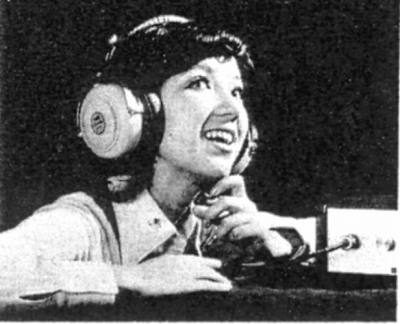
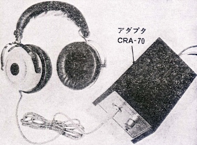

CR-1070C
 
■価格 9,300円
■型式 エレクトロスタティック型プッシュプル方式
■振動板
■インピーダンス
■再生周波数帯域 18-25,000Hz
■許容入力
■感度 95ｄB/100V
■コード
■重量 450g
■発売 1971〜73年頃
■販売終了 1974年頃
■備考
別売アダプター CRA-70A 5,000円
成極電圧 200V D.C の純コンデンサー型
YEAR BOOK 1973
に記載
CRA-70A回路図。３番ピンバイアスの5ピン端子だったようだ。
なお1972年の「電波科学」誌によればセルフバイアス式のCRA-70Dと
UM-1型電池によるバッテリーバイアスのCRA-70Bがあったそうだ。
CRA-70Bの電池寿命は300時間以上だったそうだ。
エレガのインデックスへ